Plotting
This section shows the main plotting capabilities of SpectroChemPy. Most of them are based on Matplotlib, one of the most used plotting library for Python, and its pyplot interface. While not mandatory, to follow this tutorial, some familiarity with this library can help, and we recommend a brief look at some matplotlib tutorials as well.
Note that in the near future, SpectroChemPy should also offer the possibility to use Plotly for a better interactivity inside a notebook.
Finally, some commands and objects used here are described in-depth in the sections related to import and slicing of NDDatasets and the * NDDatasets themselves.
Load the API
First, before anything else, we import the spectrochempy API:
[1]:
import spectrochempy as scp
![](data:image/png;base64,iVBORw0KGgoAAAANSUhEUgAAABgAAAAYCAYAAADgdz34AAAAAXNSR0IArs4c6QAAAAlw
SFlzAAAJOgAACToB8GSSSgAAAetpVFh0WE1MOmNvbS5hZG9iZS54bXAAAAAAADx4OnhtcG1ldGEgeG1sbnM6eD0iYWRvYmU6bnM6
bWV0YS8iIHg6eG1wdGs9IlhNUCBDb3JlIDUuNC4wIj4KICAgPHJkZjpSREYgeG1sbnM6cmRmPSJodHRwOi8vd3d3LnczLm9yZy8x
OTk5LzAyLzIyLXJkZi1zeW50YXgtbnMjIj4KICAgICAgPHJkZjpEZXNjcmlwdGlvbiByZGY6YWJvdXQ9IiIKICAgICAgICAgICAg
eG1sbnM6eG1wPSJodHRwOi8vbnMuYWRvYmUuY29tL3hhcC8xLjAvIgogICAgICAgICAgICB4bWxuczp0aWZmPSJodHRwOi8vbnMu
YWRvYmUuY29tL3RpZmYvMS4wLyI+CiAgICAgICAgIDx4bXA6Q3JlYXRvclRvb2w+bWF0cGxvdGxpYiB2ZXJzaW9uIDIuMS4wLCBo
dHRwOi8vbWF0cGxvdGxpYi5vcmcvPC94bXA6Q3JlYXRvclRvb2w+CiAgICAgICAgIDx0aWZmOk9yaWVudGF0aW9uPjE8L3RpZmY6
T3JpZW50YXRpb24+CiAgICAgIDwvcmRmOkRlc2NyaXB0aW9uPgogICA8L3JkZjpSREY+CjwveDp4bXBtZXRhPgqNQaNYAAAGiUlE
QVRIDY1We4xU1Rn/3XPuYx47u8w+hnU38hTcuoUEt/6D2y4RB0ME1BoEd9taJaKh9CFiN7YGp7appUAMNmktMZFoJTYVLVQ0smsy
26CN0SU1QgsuFAaW3WVmx33N677O6XfuyoIxTXqSO/fec+75fd93vt/3/UbDV0aKSZmCpkFMLz3T9utuu2N+o98aDSMBKVAo89z5
y+zEz3ZafcCOfvWdlGCalqKn1Bf71CygTd+mf1esSOnpdMpTb+vWpTZuWVfe3jLPa5tzHYNm0T5N0gpdkkHaDBeGBU6d1/t/fyS8
+/CbqdfUvmsx1PuMgc2bNxv79u1zgd31r+7JH1jbIZKxWRXAcYUQ8IWvBfBXNjEuJWPgMA02NR7C3/pYT9fjdZ3A9tGrWF8YSJHn
qcDz3y7q2T967PZv+gnYJdd1mEZ+62zGDQV/dQgKhmLzDNOXCEWM3j6eTT5Y3w78dOBKJLR1PQf+4ivPj76UPZnssBN+wbM9Aet/
AV81Mf1EEULXYfOobvX2WWQk0aoioXwwSmirOlioY0mu8BIouzYl7P8GV3vpqCCEZvlFz769w08oLDWvyKIyL1asSm28d6WfzA97
ztvvV1kexUMsmhlkULEkuGYmFYC6AvfUrITnwUKl5K79lkjeSSRRTCTbQPd95e1WzMbZSya74XoXAxctCllCnbECMOjZNGRwvzIX
nD85wbkMmKK+U045Dtdi8Qp+SAxU2GTg2bYlC9224pgvmSb54vkVTBQYyhUt2KjAMyMmPjwRQW5Mh2WKwJhlBh6jVGagFM84wZnQ
4bpC0Rt4pk1PbSt0NDcxDA5xryosDHWgtbM0DGZDWLSoiDMDYeQnGVrmOThxLozB0RAaahzkJzjKNqcIQBymJFMkOlN8Dqjpg0XY
Tx5xO/QbmmUrqIjGJznq47TqTaClKYfjp+PInLMwnOdYvtQBZ2XcunQY+VwIo4U4muoFEjVEFE6lQyEUKzHYfgQG9ylCyngU+Cxj
tOqxCDGHcCsOMCs6iQul5ZiStdATYxjMZXDLTUVwLY8Jey4uOh2IxjwsrP8UXJYxUrkZrghBahzV5iXU6gNkq0Z1EzIsUBUSCV2n
EOHo0LVxHCpuxabJJdhi5PFnvw5vLXwXIfNZvD/+JNo/X40NegE54sUaazl+UL8XD1x+FB9Ijjt4EQfdGN6J/x131LwIV9ap/AYs
0x1fz1ZKFbh6A7qKy/By9Dg6G36Ep91vUJJ15Cqr0Z67E8/HzmBrw1OwxWyM+3Mo6BAuSB17oyfx0Oyl2DN0Hqs/70Cx6hBCvESF
UY1ShWXZZEE7OTAYxZzaPH4TuoiusZvRnunFy2NbiHYuBp2vB66srX4vMEjpRKPxKXmnoQ4+Mn4DPiv8CYcrs3GfNUXJLtM+alSO
hrMj/KT+wBNW3+E/2liywNO3iSflbaFva/+stGDTxE0E9Sjaox8HBhxpEamzMGSEaFKg+mjEddzDh1MxTDq3YV1kGBsjfwW3S9Cq
anjmko+ndlb1UR3s6K8JlfphNWq9Ew/7c61T2BB/EbcaNkb8GBaE0tANH7/M34PLdhJDzjIcL9xPbdTG6zyM72Y+wXPHmvB489No
fm0b5HnbQ9Rgp/7DSSd29AeVvPeNyK6JcYl/yQVi5dBjuGvoV/gaJe47s45QUxrDmcYX0MBsdF7egvXZ7+O0vZA4X8QmOQWjlSK7
RDz5wIM30gp9UbWcGjXxhzdDu1SiNSpx6kcQB57rPnr/3dlkZarWLnlRq5oPET1dOCIOk4wALib9eeS5iygfhkd09H0DWphB/+gs
+PcOAS+ssrFmmXXgVfR0de9cpbAJfH3Q1jofW9DZk56dDcVsq9YcsoUMEd1qyLoT3BX1YiyHMJuk97hyjqIoE91t+NcTLeN0ZrfM
oXatZbu6G0h4VG+ibqq0IJVK6cAjo6serG3vSUezCMct0yQeSOFJSUImqb2qbknUpDqlZxE0QZ+ZUpSlZx79h4Nda6zef9dlk121
JDjbR5XggPRZlRnS6bRQRtLpn4++cuie/Yvn2svmNxuLw9WCcYIl4fEoTEGiSTUqJdfgU+8ROqf1iMkLzS389YtNPXc/PH8l8ONB
JZkHD+4JtD04HmVEDWWErmBhzV2/2LB1bemJG6krzv2S6NOHUgtEP0Oif5pE/3fHoruP7N8RiP61GArzSwbUhJJQpXJKiKbfr/3b
IhKq76sKPUdF9NW/LSqfSn6vjv8C45H/6FSgvZQAAAAASUVORK5CYII=)
|
SpectroChemPy's API - v.0.6.11.dev82 © Copyright 2014-2025 - A.Travert & C.Fernandez @ LCS |
Loading the data
For sake of demonstration we import a NDDataset consisting in infrared spectra from an omnic .spg file and make some (optional) preparation of the data to display (see also Import IR Data).
[2]:
dataset = scp.read("irdata/nh4y-activation.spg")
Preparing the data
[3]:
dataset = dataset[:, 4000.0:650.0] # We keep only the region that we want to display
We change the y coordinated so that times start at 0, put it in minutes and change its title/
[4]:
dataset.y -= dataset.y[0]
dataset.y.ito("minutes")
dataset.y.title = "relative time on stream"
We also mask a region that we do not want to display
[5]:
dataset[:, 1290.0:920.0] = scp.MASKED
Selecting the output window
For the examples below, we use inline matplotlib figures (non-interactive): this can be forced using the magic function before loading spectrochempy.:
%matplotlib inline
but it is also the default in Jupyter lab (so we don’t really need to specify this). Note that when such magic function has been used, it is not possible to change the setting, except by resetting the notebook kernel.
If one wants interactive displays (with selection, zooming, etc…) one can use:
%matplotlib widget
However, this suffers (at least for us) some incompatibilities in jupyter lab … it is worth to try! If you can not get it working in jupyter lab and you need interactivity, you can use the following:
%matplotlib
which has the effect of displaying the figures in independent windows using default matplotlib backend (e.g., Tk ), with all the interactivity of matplotlib.
But you can explicitly request a different GUI backend:
%matplotlib qt
[6]:
%matplotlib inline
Default plotting
To plot the previously loaded dataset, it is very simple: we use the plot command (generic plot).
As the current NDDataset is 2D, a stack plot is displayed by default, with a viridis colormap.
[7]:
_ = dataset.plot()
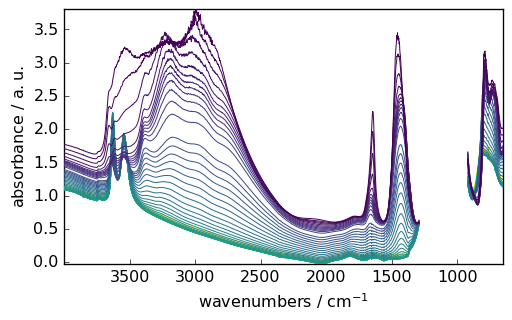
Note, in the cell above, that we used _ = ... syntax. This is to avoid any output but the plot from this statement.
Note also that the plot() method uses some of NDDataset metadata: the NDDataset.x coordinate data (here the wavenumber values), name (here ‘wavenumbers’), units (here ‘cm-1’) as well as the NDDataset.title (here ‘absorbance’) and `NDDataset.units (here ‘absorbance’).
Changing the aspect of the plot
Change the NDDataset.preferences
We can change the default plot configuration for this dataset by changing its `preferences’ attributes (see at the end of this tutorial for an overview of all the available parameters).
[8]:
prefs = dataset.preferences # we will use prefs instead of dataset.preference
prefs.figure.figsize = (6, 3) # The default figsize is (6.8,4.4)
prefs.colorbar = True # This add a color bar on a side
prefs.colormap = "magma" # The default colormap is viridis
prefs.axes.facecolor = ".95" # Make the graph background colored in a light gray
prefs.axes.grid = True
_ = dataset.plot()
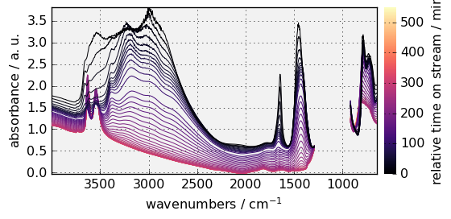
The colormap can also be changed by setting cmap in the arguments. If you prefer not using colormap, cmap=None should be used. For instance:
[9]:
_ = dataset.plot(cmap=None, colorbar=False)
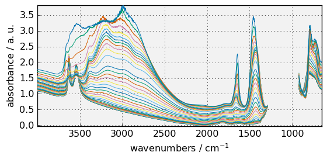
Note that, by default, sans-serif font are used for all text in the figure. But if you prefer, serif, or monospace font can be used instead. For instance:
[10]:
prefs.font.family = "monospace"
_ = dataset.plot()
findfont: Font family ['cursive'] not found. Falling back to DejaVu Sans.
findfont: Generic family 'cursive' not found because none of the following families were found: Apple Chancery, Textile, Zapf Chancery, Sand, Script MT, Felipa, cursive
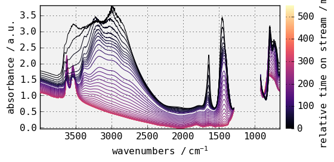
Once changed, the NDDataset.preferences attributes will be used for the subsequent plots, but can be reset to the initial defaults anytime using the NDDataset.preferences.reset() method. For instance:
[11]:
print(f"font before reset: {prefs.font.family}")
prefs.reset()
print(f"font after reset: {prefs.font.family}")
font before reset: monospace
font after reset: sans-serif
It is also possible to change a parameter for a single plot without changing the preferences attribute by passing it as an argument of the plot()method. For instance, as in matplotlib, the default colormap is `viridis’:
[12]:
prefs.colormap
[12]:
'viridis'
but ‘magma’ can be passed to the plot() method:
[13]:
_ = dataset.plot(colormap="magma")
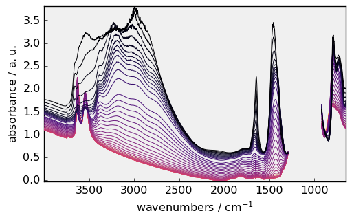
while the preferences.colormap is still set to `viridis’:
[14]:
prefs.colormap
[14]:
'viridis'
and will be used by default for the next plots:
[15]:
_ = dataset.plot()
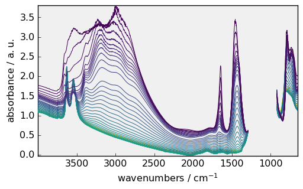
Adding titles and annotations
The plot function return a reference to the subplot ax object on which the data have been plotted. We can then use this reference to modify some element of the plot.
For example, here we add a title and some annotations:
[16]:
prefs.reset()
prefs.colorbar = False
prefs.colormap = "terrain"
prefs.font.family = "monospace"
ax = dataset.plot()
ax.grid(
False
) # This temporarily suppress the grid after the plot is done but is not saved in prefs
# set title
title = ax.set_title("NH$_4$Y IR spectra during activation")
title.set_color("red")
title.set_fontstyle("italic")
title.set_fontsize(14)
# put some text
ax.text(1200.0, 1, "Masked region\n (saturation)", rotation=90)
# put some fancy annotations (see matplotlib documentation to learn how to design this)
_ = ax.annotate(
"OH groups",
xy=(3600.0, 1.25),
xytext=(-10, -50),
textcoords="offset points",
arrowprops={
"arrowstyle": "fancy",
"color": "0.5",
"shrinkB": 5,
"connectionstyle": "arc3,rad=-0.3",
},
)
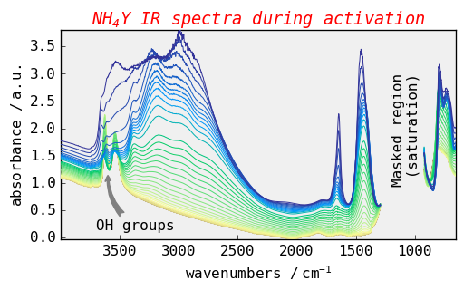
More information about annotation can be found in the matplotlib documentation: annotations
Changing the plot style using matplotlib style sheets
The easiest way to change the plot style may be to use pre-defined styles such as those used in matplotlib styles. This is directly included in the preferences of SpectroChemPy
[17]:
prefs.style = "grayscale"
_ = dataset.plot()
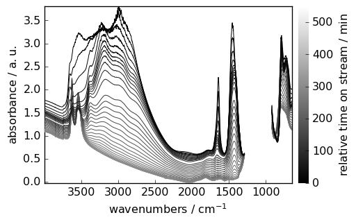
[18]:
prefs.style = "ggplot"
_ = dataset.plot()
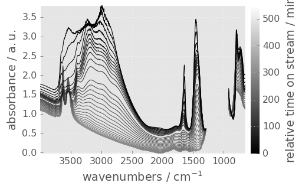
Other styles are :
paper , which create figure suitable for two columns article (fig width: 3.4 inch)
poster
talk
the styles can be combined, so you can have a style sheet that customizes colors and a separate style sheet that alters element sizes for presentations:
[19]:
prefs.reset()
prefs.style = "grayscale", "paper"
_ = dataset.plot(colorbar=True)
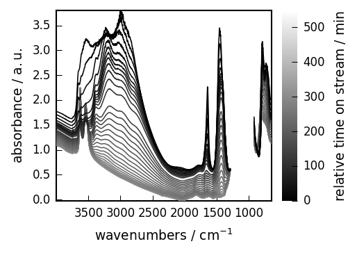
As previously, style specification can also be done directly in the plot method without affecting the `preferences’ attribute.
[20]:
prefs.colormap = "magma"
_ = dataset.plot(style=["scpy", "paper"])
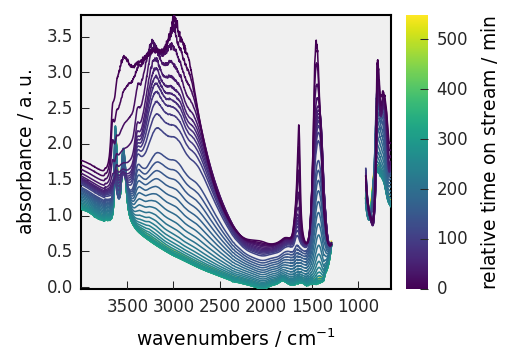
To get a list of all available styles :
[21]:
prefs.available_styles
[21]:
['seaborn-v0_8-white',
'paper',
'tableau-colorblind10',
'seaborn-v0_8-talk',
'seaborn-v0_8-muted',
'_mpl-gallery-nogrid',
'_classic_test_patch',
'seaborn-v0_8-deep',
'bmh',
'seaborn-v0_8-colorblind',
'_mpl-gallery',
'seaborn-v0_8-bright',
'mydefault',
'classic',
'grayscale',
'seaborn-v0_8-pastel',
'fivethirtyeight',
'fast',
'seaborn-v0_8',
'dark_background',
'poster',
'seaborn-v0_8-dark',
'seaborn-v0_8-ticks',
'petroff10',
'notebook',
'ggplot',
'scpy',
'serif',
'sans',
'talk',
'Solarize_Light2',
'seaborn-v0_8-darkgrid',
'seaborn-v0_8-poster',
'seaborn-v0_8-paper',
'seaborn-v0_8-notebook',
'seaborn-v0_8-dark-palette',
'seaborn-v0_8-whitegrid']
Again, to restore the default setting, you can use the reset function
[22]:
prefs.reset()
_ = dataset.plot()

Create your own style
If you want to create your own style for later use, you can use the command makestyle (warning: you can not use scpy which is the READONLY default style:
[23]:
prefs.makestyle("scpy")
ERROR | NameError: Style name starting with `scpy` are READ-ONLY. Please use an another style name.
If no name is provided a default name is used :mydefault
[24]:
prefs.makestyle()
[24]:
'mydefault'
Example:
[25]:
prefs.reset()
prefs.colorbar = True
prefs.colormap = "jet"
prefs.font.family = "monospace"
prefs.font.size = 14
prefs.axes.labelcolor = "blue"
prefs.axes.grid = True
prefs.axes.grid_axis = "x"
_ = dataset.plot()
prefs.makestyle()
[25]:
'mydefault'
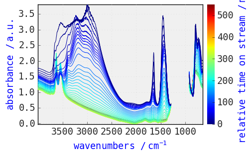
[26]:
prefs.reset()
_ = dataset.plot() # plot with the default scpy style
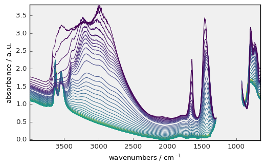
[27]:
prefs.style = "mydefault"
_ = dataset.plot() # plot with our own style
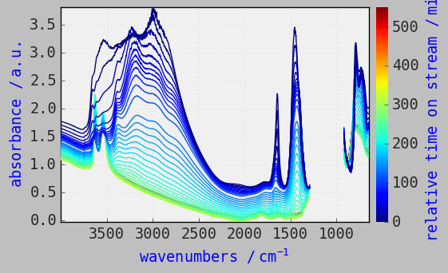
Changing the type of plot
By default, plots of 2D datasets are done in ‘stack’ mode. Other available modes are ‘map’, ‘image’, ‘surface’ and ‘waterfall’.
The default can be changed permanently by setting the variable pref.method_2D to one of these alternative modes, for instance if you like to have contour plot, you can use:
[28]:
prefs.reset()
prefs.method_2D = "map" # this will change permanently the type of 2D plot
prefs.colormap = "magma"
prefs.figure_figsize = (5, 3)
_ = dataset.plot()
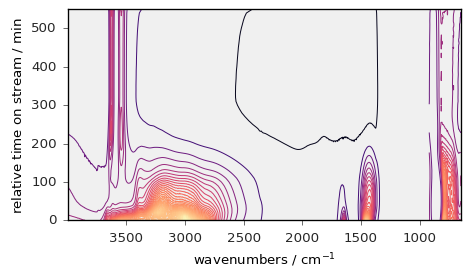
You can also, for an individual plot use specialised plot commands, such as plot_stack() , plot_map() , plot_waterfall() , plot_surface() or plot_image() , or equivalently the generic plot function with the method parameter, i.e., plot(method='stack') , plot(method='map') , etc…
These modes are illustrated below:
[29]:
prefs.axes_facecolor = "white"
_ = dataset.plot_image(colorbar=True) # will use image_cmap preference!
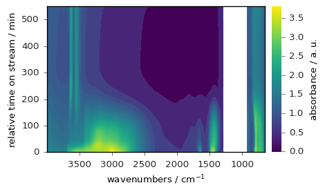
Here we use the generic plot() with the `method’ argument and we change the image_cmap:
[30]:
_ = dataset.plot(method="image", image_cmap="jet", colorbar=True)
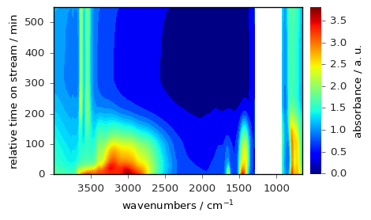
The colormap normalization can be changed using the norm parameter, as illustrated below, for a centered colomap:
[31]:
import matplotlib as mpl
norm = mpl.colors.CenteredNorm()
_ = dataset.plot(method="image", image_cmap="jet", colorbar=True, norm=norm)
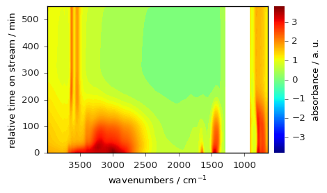
or below for a log scale (more information about colormap normalization can be found here).
[32]:
norm = mpl.colors.LogNorm(vmin=0.1, vmax=4.0)
_ = dataset.plot(method="image", image_cmap="jet", colorbar=True, norm=norm)
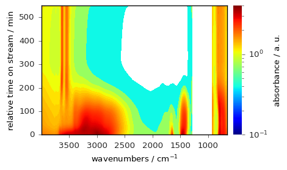
Below an example of a waterfall plot:
[33]:
prefs.reset()
_ = dataset.plot_waterfall(figsize=(7, 4), y_reverse=True)
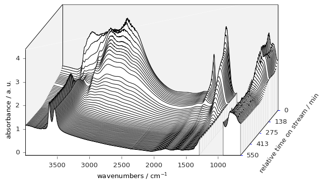
And finally an example of a surface plot:
[34]:
prefs.reset()
_ = dataset.plot_surface(figsize=(7, 7), linewidth=0, y_reverse=True, autolayout=False)
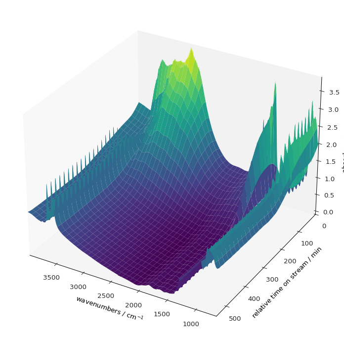
Plotting 1D datasets
[35]:
prefs.reset()
d1D = dataset[-1] # select the last row of the previous 2D dataset
_ = d1D.plot(color="r")
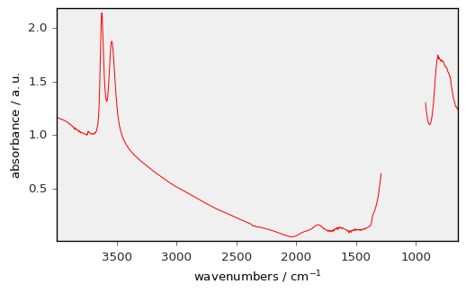
[36]:
prefs.style = "seaborn-v0_8-paper"
_ = dataset[3].plot(scatter=True, pen=False, me=30, ms=5)
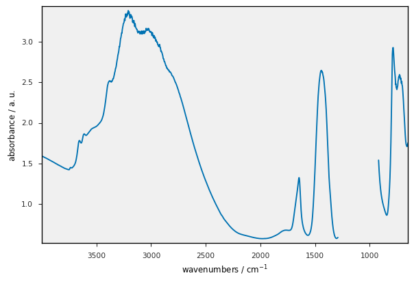
Plotting several dataset on the same figure
We can plot several datasets on the same figure using the clear argument.
[37]:
nspec = int(len(dataset) / 4)
ds1 = dataset[:nspec] # split the dataset into too parts
ds2 = dataset[nspec:] - 2.0 # add an offset to the second part
ax1 = ds1.plot_stack()
_ = ds2.plot_stack(ax=ax1, clear=False, zlim=(-2.5, 4))
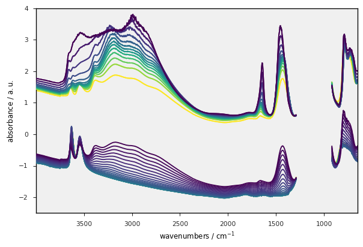
For 1D datasets only, you can also use the plot_multiplemethod:
[38]:
datasets = [dataset[0], dataset[10], dataset[20], dataset[50], dataset[53]]
labels = [f"sample {label}" for label in ["S1", "S10", "S20", "S50", "S53"]]
prefs.reset()
prefs.axes.facecolor = ".99"
prefs.axes.grid = True
_ = scp.plot_multiple(
method="scatter", me=10, datasets=datasets, labels=labels, legend="best"
)
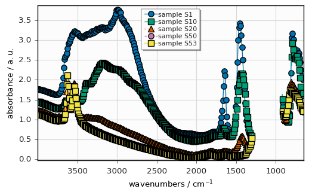
Overview of the main configuration parameters
To display a dictionary of the current settings (compared to those set by default at API startup), you can simply type :
[39]:
prefs
[39]:
"axes_facecolor": ".99",
"axes_grid": true
}
Warning: Note that with respect to matplotlib,the parameters in the dataset.preferences dictionary have a slightly different name, e.g. figure_figsize (SpectroChemPy) instead of figure.figsize (matplotlib syntax) (this is because in SpectroChemPy, dot (. ) cannot be used in parameter name, and thus it is replaced by an underscore (_ ))
To display the current values of all parameters corresponding to one group, e.g. lines , type:
[40]:
prefs.lines
[40]:
"antialiased": true,
"color": "b",
"dash_capstyle": "butt",
"dash_joinstyle": "round",
"dashdot_pattern": [
3.0,
5.0,
1.0,
5.0
],
"dashed_pattern": [
6.0,
6.0
],
"dotted_pattern": [
1.0,
3.0
],
"linestyle": "-",
"linewidth": 0.75,
"marker": "None",
"markeredgecolor": "auto",
"markeredgewidth": 0.0,
"markerfacecolor": "auto",
"markersize": 7.0,
"scale_dashes": false,
"solid_capstyle": "round",
"solid_joinstyle": "round"
}
To display help on a single parameter, type:
[41]:
prefs.help("lines_linewidth")
lines_linewidth = 0.75 [default: 0.75]
line width in points
To view all parameters:
[42]:
prefs.all()
agg_path_chunksize = 20000 [default: 20000]
0 to disable; values in the range 10000 to 100000 can improve speed slightly and
prevent an Agg rendering failure when plotting very large data sets, especially
if they are very gappy. It may cause minor artifacts, though. A value of 20000
is probably a good starting point.
antialiased = True [default: True]
antialiased option for surface plot
axes3d_grid = True [default: True]
display grid on 3d axes
axes_autolimit_mode = data [default: data]
How to scale axes limits to the data. Use "data" to use data limits, plus some
margin. Use "round_number" move to the nearest "round" number
axes_axisbelow = True [default: True]
whether axis gridlines and ticks are below the axes elements (lines, text, etc)
axes_edgecolor = k [default: black]
axes edge color
axes_facecolor = .99 [default: F0F0F0]
axes background color
axes_formatter_limits = (-7.0, 7.0) [default: traitlets.Undefined]
use scientific notation if log10 of the axis range is smaller than the first or
larger than the second
axes_formatter_offset_threshold = 4 [default: 4]
When useoffset is True, the offset will be used when it can remove at least this
number of significant digits from tick labels.
axes_formatter_use_locale = False [default: False]
When True, format tick labels according to the user"s locale. For example, use
"," as a decimal separator in the fr_FR locale.
axes_formatter_use_mathtext = False [default: False]
When True, use mathtext for scientific notation.
axes_formatter_useoffset = False [default: False]
If True, the tick label formatter will default to labeling ticks relative to an
offset when the data range is small compared to the minimum absolute value of
the data.
axes_grid = True [default: False]
display grid or not
axes_grid_axis = both [default: both]
axes_grid_which = major [default: major]
axes_labelcolor = k [default: black]
axes_labelpad = 5.0 [default: 4.0]
space between label and axis
axes_labelsize = 10.0 [default: 10.0]
fontsize of the x any y labels
axes_labelweight = normal [default: normal]
weight of the x and y labels
axes_linewidth = 1.0 [default: 0.8]
edge linewidth
axes_prop_cycle = cycler('color', ['0072B2', '009E73', 'D55E00', 'CC79A7', 'F0E442', '56B4E9']) [default: cycler('color', ['007200', '009E73', 'D55E00', 'CC79A7', 'F0E442', '56B4E9'])]
color cycle for plot lines as list of string colorspecs: single letter, long
name, or web-style hex
axes_spines_bottom = True [default: True]
axes_spines_left = True [default: True]
axes_spines_right = True [default: True]
axes_spines_top = True [default: True]
axes_titlepad = 5.0 [default: 5.0]
pad between axes and title in points
axes_titlesize = 14.0 [default: 14.0]
fontsize of the axes title
axes_titleweight = normal [default: normal]
font weight for axes title
axes_titley = 1.0 [default: 1.0]
at the top, no autopositioning.
axes_unicode_minus = True [default: True]
use unicode for the minus symbol rather than hyphen. See
http://en.wikipedia.org/wiki/Plus_and_minus_signs#Character_codes
axes_xmargin = 0.0 [default: 0.05]
x margin. See `axes.Axes.margins`
axes_ymargin = 0.0 [default: 0.05]
y margin See `axes.Axes.margins`
ccount = 50 [default: 50]
ccount (steps in the column mode) for surface plot
colorbar = False [default: False]
Show color bar for 2D plots
colormap = viridis [default: viridis]
A colormap name, gray etc... (equivalent to image_cmap
contour_alpha = 1.0 [default: 1.0]
Transparency of the contours
contour_corner_mask = True [default: True]
True | False | legacy
contour_negative_linestyle = dashed [default: dashed]
dashed | solid
contour_start = 0.05 [default: 0.05]
Fraction of the maximum for starting contour levels
date_autoformatter_day = %b %d %Y [default: %b %d %Y]
date_autoformatter_hour = %H:%M:%S [default: %H:%M:%S]
date_autoformatter_microsecond = %H:%M:%S.%f [default: %H:%M:%S.%f]
date_autoformatter_minute = %H:%M:%S.%f [default: %H:%M:%S.%f]
date_autoformatter_month = %b %Y [default: %b %Y]
date_autoformatter_second = %H:%M:%S.%f [default: %H:%M:%S.%f]
date_autoformatter_year = %Y [default: %Y]
errorbar_capsize = 3.0 [default: 1.0]
length of end cap on error bars in pixels
figure_autolayout = True [default: True]
When True, automatically adjust subplot parameters to make the plot fit the
figure
figure_dpi = 96.0 [default: 96.0]
figure dots per inch
figure_edgecolor = white [default: white]
figure edgecolor
figure_facecolor = white [default: white]
figure facecolor; 0.75 is scalar gray
figure_figsize = (5.5, 3.5) [default: traitlets.Undefined]
figure size in inches
figure_frameon = True [default: True]
Show figure frame
figure_max_open_warning = 30 [default: 30]
The maximum number of figures to open through the pyplot interface before
emitting a warning. If less than one this feature is disabled.
figure_subplot_bottom = 0.12 [default: 0.12]
the bottom of the subplots of the figure
figure_subplot_hspace = 0.0 [default: 0.0]
the amount of height reserved for white space between subplots, expressed as a
fraction of the average axis height
figure_subplot_left = 0.15 [default: 0.15]
the left side of the subplots of the figure
figure_subplot_right = 0.95 [default: 0.95]
the right side of the subplots of the figure
figure_subplot_top = 0.98 [default: 0.98]
the top of the subplots of the figure
figure_subplot_wspace = 0.0 [default: 0.0]
the amount of width reserved for blank space between subplots, expressed as a
fraction of the average axis width
figure_titlesize = 12.0 [default: 12.0]
size of the figure title (Figure.suptitle())
figure_titleweight = normal [default: normal]
weight of the figure title
font_family = sans-serif [default: sans-serif]
sans-serif|serif|cursive|monospace|fantasy
font_size = 10.0 [default: 10.0]
The default fontsize. Special text sizes can be defined relative to font.size,
using the following values: xx-small, x-small, small, medium, large, x-large,
xx-large, larger, or smaller
font_style = normal [default: normal]
normal (or roman), italic or oblique
font_variant = normal [default: normal]
font_weight = normal [default: normal]
100|200|300|normal or 400|500|600|bold or 700|800|900|bolder|lighter
grid_alpha = 1.0 [default: 1.0]
transparency, between 0.0 and 1.0
grid_color = .85 [default: .85]
grid color
grid_linestyle = - [default: -]
solid
grid_linewidth = 0.85 [default: 0.85]
in points
hatch_color = k [default: black]
hatch_linewidth = 1.0 [default: 1.0]
hist_bins = 10 [default: traitlets.Undefined]
The default number of histogram bins. If Numpy 1.11 or later is installed, may
also be `auto`
image_aspect = equal [default: equal]
equal | auto | a number
image_cmap = viridis [default: viridis]
A colormap name, gray etc...
image_composite_image = True [default: True]
When True, all the images on a set of axes are combined into a single composite
image before saving a figure as a vector graphics file, such as a PDF.
image_interpolation = bilinear [default: antialiased]
see help(imshow) for options
image_lut = 256 [default: 256]
the size of the colormap lookup table
image_origin = upper [default: upper]
lower | upper
image_resample = False [default: True]
latex_preamble = \usepackage{siunitx}
\sisetup{detect-all}
\usepackage{times} # set the normal font here
\usepackage{sansmath}
# load up the sansmath so that math -> helvet
\sansmath
[default: \usepackage{siunitx}
\sisetup{detect-all}
\usepackage{times} # set the normal font here
\usepackage{sansmath}
# load up the sansmath so that math -> helvet
\sansmath
]
Latex preamble for matplotlib outputs IMPROPER USE OF THIS FEATURE WILL LEAD TO
LATEX FAILURES. preamble is a comma separated list of LaTeX statements that are
included in the LaTeX document preamble. An example: text.latex.preamble :
\usepackage{bm},\usepackage{euler} The following packages are always loaded with
usetex, so beware of package collisions: color, geometry, graphicx, type1cm,
textcomp. Adobe Postscript (PSSNFS) font packages may also be loaded, depending
on your font settings.
legend_borderaxespad = 0.5 [default: 0.5]
the border between the axes and legend edge
legend_borderpad = 0.4 [default: 0.4]
border whitespace
legend_columnspacing = 0.5 [default: 0.5]
column separation
legend_edgecolor = inherit [default: 0.8]
background patch boundary color
legend_facecolor = inherit [default: inherit]
inherit from axes.facecolor; or color spec
legend_fancybox = False [default: True]
if True, use a rounded box for the legend background, else a rectangle
legend_fontsize = 9.0 [default: 9.0]
legend_framealpha = None [default: traitlets.Undefined]
legend patch transparency
legend_frameon = False [default: False]
if True, draw the legend on a background patch
legend_handleheight = 0.7 [default: 0.7]
the height of the legend handle
legend_handlelength = 2.0 [default: 2.0]
the length of the legend lines
legend_handletextpad = 0.1 [default: 0.1]
the space between the legend line and legend text
legend_labelspacing = 0.2 [default: 0.2]
the vertical space between the legend entries
legend_loc = upper right [default: best]
legend_markerscale = 1.0 [default: 1.0]
the relative size of legend markers vs. original
legend_numpoints = 1 [default: 1]
the number of marker points in the legend line
legend_scatterpoints = 1 [default: 1]
number of scatter points
legend_shadow = False [default: False]
if True, give background a shadow effect
lines_antialiased = True [default: True]
render lines in antialiased (no jaggies)
lines_color = b [default: b]
has no affect on plot(); see axes.prop_cycle
lines_dash_capstyle = butt [default: butt]
butt|round|projecting
lines_dash_joinstyle = round [default: round]
miter|round|bevel
lines_dashdot_pattern = (3.0, 5.0, 1.0, 5.0) [default: traitlets.Undefined]
lines_dashed_pattern = (6.0, 6.0) [default: traitlets.Undefined]
lines_dotted_pattern = (1.0, 3.0) [default: traitlets.Undefined]
lines_linestyle = - [default: -]
solid line
lines_linewidth = 0.75 [default: 0.75]
line width in points
lines_marker = None [default: None]
the default marker
lines_markeredgecolor = auto [default: auto]
the default markeredgecolor
lines_markeredgewidth = 0.0 [default: 0.0]
the line width around the marker symbol
lines_markerfacecolor = auto [default: auto]
the default markerfacecolor
lines_markersize = 7.0 [default: 7.0]
markersize, in points
lines_scale_dashes = False [default: False]
lines_solid_capstyle = round [default: round]
butt|round|projecting
lines_solid_joinstyle = round [default: round]
miter|round|bevel
markers_fillstyle = full [default: full]
full|left|right|bottom|top|none
mathtext_bf = dejavusans:bold [default: dejavusans:bold]
bold
mathtext_cal = cursive [default: cursive]
mathtext_default = regular [default: regular]
The default font to use for math. Can be any of the LaTeX font names, including
the special name "regular" for the same font used in regular text.
mathtext_fallback_to_cm = False [default: False]
When True, use symbols from the Computer Modern fonts when a symbol can not be
found in one of the custom math fonts.
mathtext_fontset = dejavusans [default: dejavusans]
Should be "dejavusans" (default), "dejavuserif", "cm" (Computer Modern), "stix",
"stixsans" or "custom"
mathtext_it = dejavusans:italic [default: dejavusans:italic]
italic
mathtext_rm = dejavusans [default: dejavusans]
mathtext_sf = sans\-serif [default: sans\-serif]
mathtext_tt = monospace [default: monospace]
max_lines_in_stack = 1000 [default: 1000]
Maximum number of lines to plot in stack plots
method_1D = pen [default: pen]
Default plot methods for 1D datasets
method_2D = stack [default: stack]
Default plot methods for 2D datasets
method_3D = surface [default: surface]
Default plot methods for 3D datasets
number_of_contours = 50 [default: 50]
Number of contours
number_of_x_labels = 5 [default: 5]
Number of X labels
number_of_y_labels = 5 [default: 5]
Number of Y labels
number_of_z_labels = 5 [default: 5]
Number of Z labels
patch_antialiased = True [default: True]
render patches in antialiased (no jaggies)
patch_edgecolor = k [default: black]
if forced, or patch is not filled
patch_facecolor = 4C72B0 [default: 4C72B0]
patch_force_edgecolor = False [default: False]
True to always use edgecolor
patch_linewidth = 0.3 [default: 0.3]
edge width in points.
path_simplify = True [default: True]
When True, simplify paths by removing "invisible" points to reduce file size and
increase rendering speed
path_simplify_threshold = 0.111111111111 [default: 0.111111111111]
The threshold of similarity below which vertices will be removed in the
simplification process
path_sketch = None [default: None]
May be none, or a 3-tuple of the form (scale, length, randomness). *scale* is
the amplitude of the wiggle perpendicular to the line (in pixels). *length* is
the length of the wiggle along the line (in pixels). *randomness* is the factor
by which the length is randomly scaled.
path_snap = True [default: True]
When True, rectilinear axis-aligned paths will be snapped to the nearest pixel
when certain criteria are met. When False, paths will never be snapped.
polaraxes_grid = True [default: True]
display grid on polar axes
rcount = 50 [default: 50]
rcount (steps in the row mode) for surface plot
savefig_bbox = standard [default: standard]
"tight" or "standard". "tight" is incompatible with pipe-based animation
backends but will worked with temporary file based ones: e.g. setting
animation.writer to ffmpeg will not work, use ffmpeg_file instead
savefig_directory = [default: ]
default directory in savefig dialog box, leave empty to always use current
working directory
savefig_dpi = 100.0 [default: 300]
figure dots per inch or "figure"
savefig_edgecolor = white [default: white]
figure edgecolor when saving
savefig_facecolor = white [default: white]
figure facecolor when saving
savefig_format = png [default: png]
png, ps, pdf, svg
savefig_jpeg_quality = 95 [default: 95]
when a jpeg is saved, the default quality parameter.
savefig_pad_inches = 0.1 [default: 0.1]
Padding to be used when bbox is set to "tight"
savefig_transparent = False [default: False]
setting that controls whether figures are saved with a transparent background by
default
scatter_marker = o [default: o]
The default marker type for scatter plots.
show_projection_x = False [default: False]
Show projection along x
show_projection_y = False [default: False]
Show projection along y
show_projections = False [default: False]
Show all projections
simplify = False [default: False]
Matplotlib path simplification for improving performance
style = scpy [default: traitlets.Undefined]
Basic matplotlib style to use
stylesheets = /home/runner/work/spectrochempy/spectrochempy/src/spectrochempy/data/stylesheets [default: ]
Directory where to look for local defined matplotlib styles when they are not in
the standard location
text_antialiased = True [default: True]
If True (default), the text will be antialiased. This only affects the Agg
backend.
text_color = .15 [default: .15]
text_hinting = auto [default: auto]
May be one of the following: 'none': Perform no hinting * 'auto': Use freetype's
autohinter * 'native': Use the hinting information in the font file, if
available, and if your freetype library supports it * 'either': Use the native
hinting information or the autohinter if none is available. For backward
compatibility, this value may also be True === 'auto' or False === 'none'.
text_hinting_factor = 8.0 [default: 8]
Specifies the amount of softness for hinting in the horizontal direction. A
value of 1 will hint to full pixels. A value of 2 will hint to half pixels etc.
text_usetex = False [default: False]
use latex for all text handling. The following fonts are supported through the
usual rc parameter settings: new century schoolbook, bookman, times, palatino,
zapf chancery, charter, serif, sans-serif, helvetica, avant garde, courier,
monospace, computer modern roman, computer modern sans serif, computer modern
typewriter. If another font is desired which can loaded using the LaTeX
\usepackage command, please inquire at the matplotlib mailing list
timezone = UTC [default: UTC]
a IANA timezone string, e.g., US/Central or Europe/Paris
use_plotly = False [default: False]
Use Plotly instead of MatPlotLib for plotting (mode Matplotlib more suitable for
printing publication ready figures)
xtick_bottom = True [default: True]
draw ticks on the bottom side
xtick_color = .15 [default: .15]
color of the tick labels
xtick_direction = out [default: out]
direction
xtick_labelsize = 10.0 [default: 10.0]
fontsize of the tick labels
xtick_major_bottom = True [default: True]
draw x axis bottom major ticks
xtick_major_pad = 4.0 [default: 3.5]
distance to major tick label in points
xtick_major_size = 4.0 [default: 3.5]
major tick size in points
xtick_major_top = True [default: True]
draw x axis top major ticks
xtick_major_width = 0.5 [default: 0.8]
major tick width in points
xtick_minor_bottom = True [default: True]
draw x axis bottom minor ticks
xtick_minor_pad = 4.0 [default: 3.4]
distance to the minor tick label in points
xtick_minor_size = 2.0 [default: 2.0]
minor tick size in points
xtick_minor_top = True [default: True]
draw x axis top minor ticks
xtick_minor_visible = False [default: False]
visibility of minor ticks on x-axis
xtick_minor_width = 0.5 [default: 0.6]
minor tick width in points
xtick_top = True [default: False]
draw ticks on the top side
ytick_color = .15 [default: .15]
color of the tick labels
ytick_direction = out [default: out]
direction
ytick_labelsize = 10.0 [default: 10.0]
fontsize of the tick labels
ytick_left = True [default: True]
draw ticks on the left side
ytick_major_left = True [default: True]
draw y axis left major ticks
ytick_major_pad = 4.0 [default: 3.5]
distance to major tick label in points
ytick_major_right = True [default: True]
draw y axis right major ticks
ytick_major_size = 4.0 [default: 3.5]
major tick size in points
ytick_major_width = 0.5 [default: 0.8]
major tick width in points
ytick_minor_left = True [default: True]
draw y axis left minor ticks
ytick_minor_pad = 4.0 [default: 3.4]
distance to the minor tick label in points
ytick_minor_right = True [default: True]
draw y axis right minor ticks
ytick_minor_size = 2.0 [default: 2.0]
minor tick size in points
ytick_minor_visible = False [default: False]
visibility of minor ticks on y-axis
ytick_minor_width = 0.5 [default: 0.6]
minor tick width in points
ytick_right = True [default: False]
draw ticks on the right side